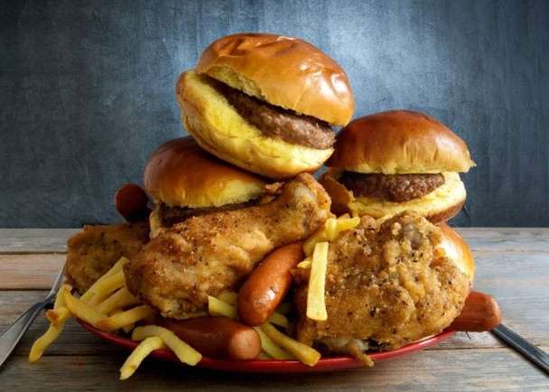
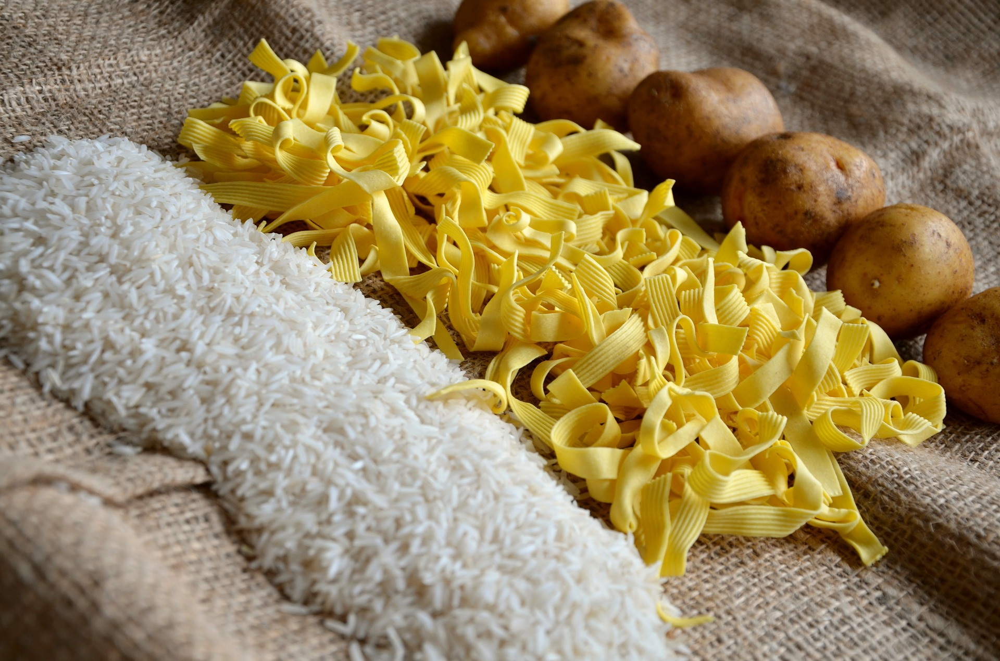
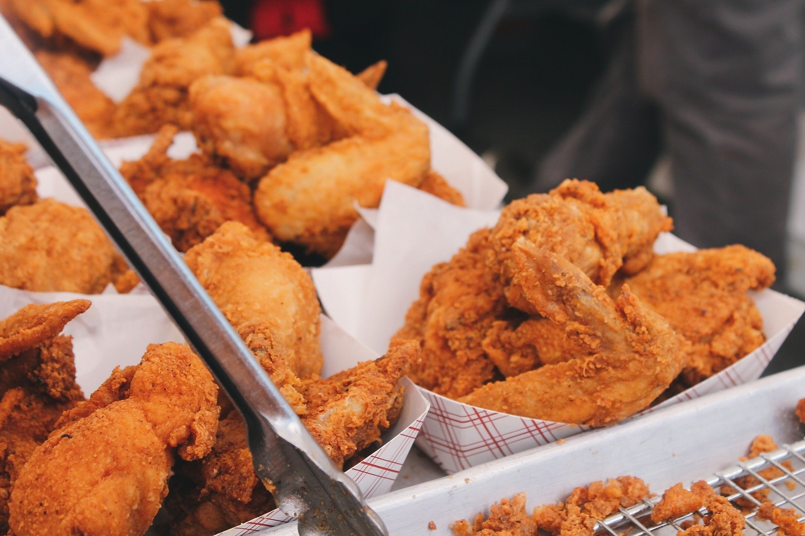
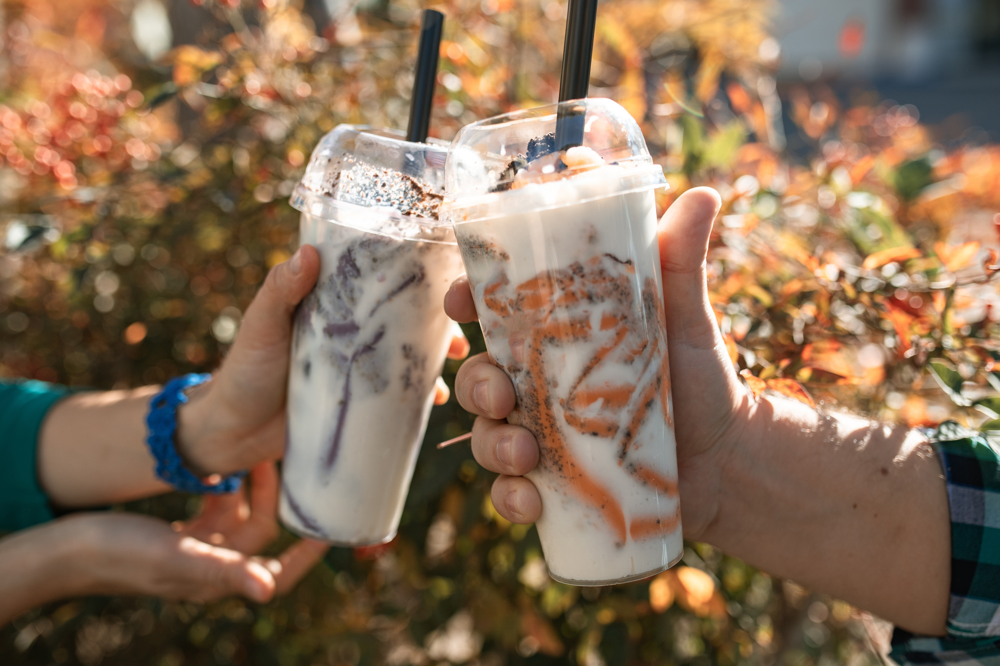

“三種不應該吃的食物

“為什麼不能吃？
以下介紹的三種食物都是建議正在減重或是想養成健康飲食習慣的你，盡量少攝取的食物。雖然建議減少以下食物的攝取量，但有些營養還是必須的，過度的偏食反而會造成飲養不均衡並出現反效果喔！

一、碳水化合物：
許多節食的人都知道，想保持身材苗條，就要減少生活中「碳水化合物」攝取。如果攝入過多這類食品，當它進入人體後所產生多餘的葡萄糖就會被轉化為脂肪，導致發胖。而那些隱藏在我們生活飲食中常見的碳水化合物有饅頭、吐司、御飯糰、麵包、炒飯、炒麵、鍋燒麵、湯麵、等等。而我們容易忽略掉的像是 蛋糕、珍珠、蔥抓餅、豌豆仁、米苔目、湯圓等等都是容易使人發胖的食物。
二、油炸食物：
油炸是一種特別受國人喜愛的料理方式，主要將食物放入滾燙的油鍋中，將食材內的水份大量蒸發，讓食物呈現金黃酥脆的美味顏色，常用於雞腿、豬排、薯條、海鮮等料理當中，然而油炸過程中，澱粉易吸收大量油脂。長期吃會使人攝取過多的熱量導致發胖。


三、含糖飲料：
如果是一天1杯含糖飲料的重度飲用者，體重可能將以以兩個月胖1公斤（以上）的迅速往上增加。
這是由於飲料中的糖比固體食物中的糖更易引起有害的代謝變化，導致肥胖、糖尿病等疾病。每236毫升的能量飲料含27克糖，碳酸飲料為26克，調味牛奶和甜茶為24克。除了肥胖，這些高糖飲料將會導致提高三酸甘油酯、血糖和血壓水平，最嚴重會引發心臟疾病問題。